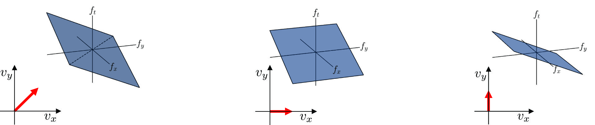

We address the problem of recovering high-speed videos from dynamic scenes under extreme photon sparsity. Existing methods rely on aggregating photon detections in local spatiotemporal windows to improve signal-to-noise ratio; however, this local grouping discards global structure and fails in low-light regimes where photon detections are sparse in space and time. In this work, we show that the information needed to recover both motion and illumination is encoded in correlations over the full space-time pattern of photon arrivals. Building on this insight, we develop a spatiotemporal flux probing theory and an algorithm that estimates the Fourier coefficients of the underlying intensity directly from the photon stream. We demonstrate that our approach (1) recovers fast motion and temporal illumination dynamics with substantially fewer photons than prior methods, (2) enables velocity-selective videography that automatically refocuses video onto specific detected motions, and (3) generalizes across sensing modalities including single-photon, event, and spike cameras.
A single-photon camera never observes the spatiotemporal flux $\phi(x, y, t)$ directly; it records only a sparse stream of photon arrivals scattered through the space-time volume. This global pattern of arrivals is highly informative: even when photons are sparse, correlations spanning the full volume still carry the structure of the underlying flux, and can be used to estimate it.
To extract that structure, we pick a probing function $p$, a pattern whose resemblance with the unknown flux is quantified by the inner product $\langle p, \phi\rangle$. We can obtain a noisy estimate of this inner product by evaluating $p$ at the detected photon time and positions $\mathbf{x}_1, \dots, \mathbf{x}_N$ and summing:
$$\underbrace{p(\mathbf{x}_1) + \dots + p(\mathbf{x}_N)}_{\substack{\text{probing measurement }\mathcal{E}_p \\ \text{from } N \text{ detected photons}}} = \underbrace{\langle p, \phi\rangle}_{\text{inner product}} + \underbrace{M_P}_{\text{noise}}$$
This gives us an approximate noise model: $\mathcal{E}_p \sim \mathcal{N}(\langle p, \phi\rangle, \langle p^2, \phi\rangle)$. Every photon in the volume contributes to this estimate.
Our framework admits any bounded probing function; we use the 3D Fourier basis because both spatial motion and illumination flicker form distinct patterns in the spatiotemporal frequency domain.
This gives a three-step reconstruction pipeline:
We show a simulated stream of photon arrivals containing one frequency (middle plot), where we scan frequencies $\mathbf{f} = (f_x, f_y, f_t)$ (left plot) of the flux $\phi$ and estimate their probing measurements $\mathcal{E}_\mathbf{f}$ (right plot). Using a noise floor (red circle, right plot), we can exclude noisy frequencies.
We scan every frequency up to the sensor's spatiotemporal precision. Below, frequency's probing energy $|\mathcal{E}_\mathbf{f}|$ is compared against the noise floor. The frequencies that survive accumulate into the running flux reconstruction $\hat{\phi}$ (right).
Within frequency space, an object moving at constant velocity $(v_x, v_y)$ concentrates its energy on a tilted plane $v_x f_x + v_y f_y + f_t = 0$ whose slope is its velocity. Estimating motion therefore reduces to finding those planes — no optical flow, no correspondence — and every velocity in the scene is found automatically, straight from the photon stream.

We validate the theory on real captures across multiple sensing modalities. For single-photon synchronous capture we use a 512×512 SPAD512 camera running at 100 kHz; for asynchronous capture, a single-pixel SPAD with 68 ps timing resolution. Baselines for single-photon videography are ultra-wideband imaging (UWB), quanta burst photography (QBP), and bit2bit.
Two foam bullets are fired at a balloon, captured with the SPAD512. The scene is lit by ceiling lights flickering at 120 Hz and a faint 31 kHz LED. Our method reconstructs the projectile trajectories, the balloon rupture, and both illumination flickers simultaneously, at frame rates selected after capture. We also simulate lower light levels by thinning the original photon detections — the bullet trajectory and ambient flicker survive well into the photon-starved regime.
The velocity detector of the theory section, in action. Our method detects the velocity of linear motion directly from the photon stream and generates videos focused on the selected velocity. We show four objects with different motion types (diagonal, quasi-linear, horizontal, vertical) and speeds ranging from the slow-moving ECCV board to the fast-moving bullets. In each panel the target object is sharp while all other content is suppressed.
Each baseline fails in the way its locality assumption predicts. Select a comparison below.
An additional SPAD512 capture similar to the teaser, but with a 20 kHz LED directed at the balloon. Our method reconstructs at 100k fps and recovers the LED flicker while preserving finer spatial detail than bit2bit, which suppresses the 20 kHz signal as noise.
The method also applies to single-pixel asynchronous SPAD sensors, recovering ultra-wideband videos with GHz bandwidth — enough to resolve a propagating laser wavefront. Compared to UWB it produces higher-quality reconstructions, and its performance holds at 30× lower photon counts.
We compare against bit2bit and UWB on simulated scenes featuring diverse motions and phenomena. As the light level decreases, reconstruction quality degrades for all methods, but ours degrades more gracefully. Quantitative metrics are in the supplemental document.
Flux probing can apply to any asynchronous sensor whose events encode a continuous intensity signal, as long as its image formation model and noise behavior are known. Spike cameras fire when accumulated light crosses a threshold, so their events probe the flux directly up to a scale factor. Event cameras fire on changes in log-intensity, so probing recovers the flux's rate of change instead, which we integrate back and combine with co-recorded intensity frames via Kalman filter (KF) to restore the slow content event cameras cannot see. In both cases the same scan-detect-reconstruct pipeline applies, with a filtering step to suppress each sensor's characteristic artifacts.
High-quality high-speed reconstruction from spike streams at quality comparable to state-of-the-art deep learning method STIR, with no training.
Applying the same probing machinery to event streams yields video reconstruction comparable to state-of-the-art deep learning method EvINR.
@inproceedings{yan_spatiotemporal_2026,
title = {Spatiotemporal {Flux} {Probing} for {Single}-{Photon} {Videography}},
booktitle = {Proc. {Eur}. {Conf}. on {Computer} {Vision} ({ECCV})},
publisher = {Springer},
author = {Yan, Jerry and Forlivesi, Matteo and Tan, Bowen and Xie, Andrew and Somasundaram, Siddharth and Nousias, Sotiris},
year = {2026},
}